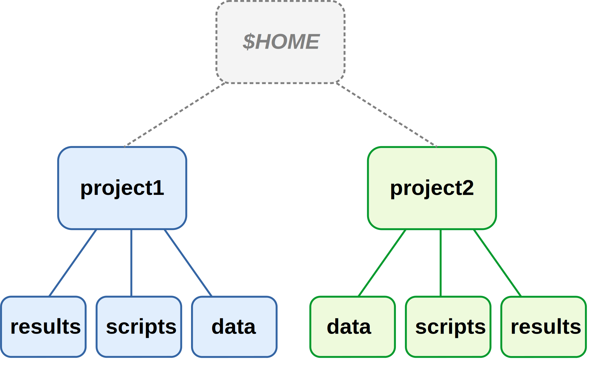
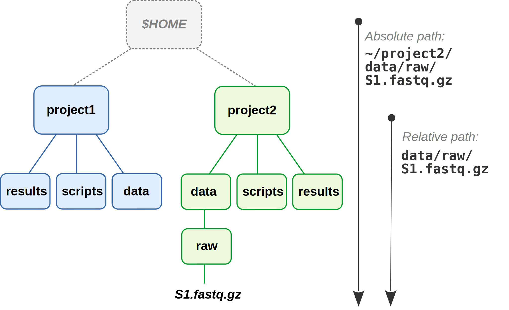

Project file organization
1 Project organization: best practices & recommendations
Good project organization and documentation facilitates:
- Collaborating with others (and yourself in the future…)
- Reproducibility
- Automation
- Version control
- Preventing your files slowly devolving into a state of incomprehensible chaos
1.1 Some underlying principles
Use one dir (dir hierarchy) for one project
Using one directory hierarchy for one project means:
- Don’t mix files/subdirs for multiple distinct projects inside one dir.
- Don’t keep files for one project in multiple places.
When you have a single directory hierarchy for each project, it is:
- Easier to find files, share your project, not throw away stuff in error, etc.
- Possible to use relative paths within a project’s scripts, which makes it more portable (more on that in a bit).

Separate different kinds of files using a consistent dir structure
Within your project’s directory hierarchy:
- Separate code from data.
- Separate raw data from processed data & results.
Also:
- Treat raw data as read-only.
- Treat generated output as somewhat disposable and as possible to regenerate.
And, as we’ll talk about below:
- Use consistent dir and file naming that follow certain best practices.
- Slow down and document what you’re doing.
1.2 Absolute versus relative paths
Recall that:
- Absolute paths start from the computer’s root dir and do not depend on your working dir.
- Relative paths start from a specific working dir (and won’t work if you’re elsewhere).
Don’t absolute paths sound better? What could be a disadvantage of them?
Absolute paths: - Don’t generally work across computers - Break when your move a project
Whereas relative paths, as long as you consistently use the root of the project as the working dir, keep working when moving the project within and between computers.


Dropbox.The absolute path has changed, but the relative path remains the same.
1.3 But how to define and separate projects?
From Wilson et al. 2017 - Good Enough Practices in Scientific Computing:
As a rule of thumb, divide work into projects based on the overlap in data and code files:
If 2 research efforts share no data or code, they will probably be easiest to manage independently.
If they share more than half of their data and code, they are probably best managed together.
If you are building tools that are used in several projects, the common code should probably be in a project of its own.
Projects with shared data or code
To access files outside of the project (e.g., shared across projects), it is easiest to create links to these files:

project1 but used in both projects.project2 contains a link to the data.But shared data or scripts are generally better stored in separate dirs, and then linked to by each project using them:

These strategies do decrease the portability of your project, and moving the shared files even within your own computer will cause links to break.
A more portable method is to keep shared (multi-project) files online — this is especially feasible for scripts under version control:

For data, this is also possible but often not practical due to file sizes. It’s easier after data has been deposited in a public repository.
1.4 Example project dir structure
Here is one good way of organizing a project with top-levels dirs:
These recommendations only go so far, and several things do depend on personal preferences and project specifics:
dataas single top-level dir, or separatemetadata,refdata,raw_datadirs?
- Naming of some dirs, like:
resultsvsanalysis(Buffalo)src(source) vsscripts
- Sometimes the order of subdirs can be done in multiple different ways. For example, where to put QC figures —
results/plots/qcorresults/qc/plots/?
Another important good practice is to use subdirectories liberally and hierarchically. For example, in omics data analysis, it often makes sense to create subdirs within results for each piece of software that you are using:
2 File naming
Three principles for good file names (from Jenny Bryan):
- Machine-readable
- Human-readable
- Playing well with default ordering
Machine-readable
Consistent and informative naming helps you to programmatically find and process files.
In file names, provide metadata like Sample ID, date, and treatment:
sample032_2016-05-03_low.txt
samples_soil_treatmentA_2019-01.txt
With such file names, you can easily select samples from e.g. a certain month or treatment (more on Thursday):
ls *2016-05* ls *treatmentA*Spaces in file names lead to inconvenience at best and disaster at worst (see example below).
More generally, only use the following in file names:
- Alphanumeric characters A-Za-z0-9
- Underscores _
- Hyphens (dashes) -
- Periods (dots) .
Spaces in file names — what could go wrong?
Say, you have a dir with some raw data in the dir
raw:lsrawNow you create a dir for sequences, with a space in the file name:
mkdir "raw sequences"You don’t want this dir after all, and carelessly try to remove it
rm -r raw sequences
What will go wrong in the example above? (Click for the answer)
Therm command will not remove the dir with the space in the file name, but it will remove the “earlier” raw dir.
Human-readable
“Name all files to reflect their content or function. For example, use names such as bird_count_table.csv, manuscript.md, or sightings_analysis.py.”
— Wilson et al. 2017
Combining machine- and human-readable
One good way (opinionated recommendations):
- Use underscores (_) to delimit units you may later want to separate on: sampleID, batch, treatment, date.
- Within such units, use dashes (-) to delimit words:
grass-samples. - Limit the use of periods (.) to indicate file extensions.
- Generally avoid capitals.
For example:
mmus001_treatmentA_filtered-mq30-only_sorted_dedupped.bam mmus002_treatmentA_filtered-mq30-only_sorted_dedupped.bam . . mmus086_treatmentG_filtered-mq30-only_sorted_dedupped.bam
Playing well with default ordering
Use leading zeros for lexicographic sorting:
sample005.Dates should always be written as
YYYY-MM-DD:2020-10-11.Group similar files together by starting with same phrase, and number scripts by execution order:
DE-01_normalize.R DE-02_test.R DE-03_process-significant.R
3 Slow down and document
Use README files to document
Use README files to document the following:
- Your methods
- Where/when/how each data and metadata file originated
- Versions of software, databases, reference genomes
- …Everything needed to rerun whole project
For documentation, use plain text files
Plain text files offer several benefits over proprietary & binary formats (like .docx and .xlsx)1:
- Can be accessed on any computer, including over remote connections
- Are future-proof
- Allow to be version-controlled
Markdown files are plain-text and strike a nice balance between ease of writing and reading, and added functionality — we’ll talk about those next.
Footnotes
These considerations apply not just to files for documentation, but also to data files, etc!↩︎